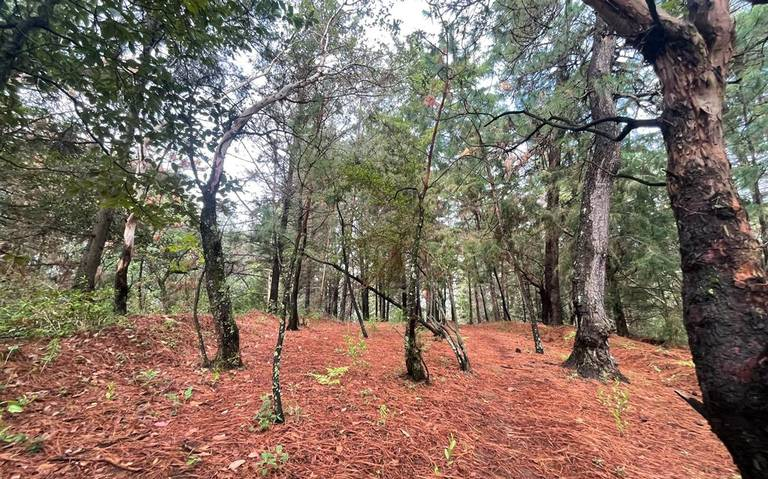
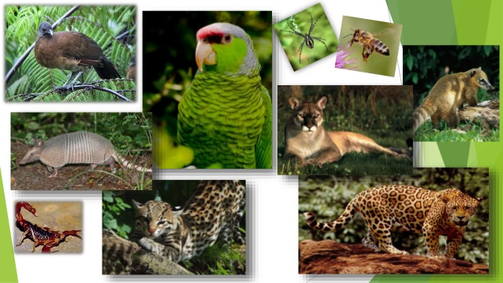

Selva Caducifolia de Chiapas

Se localiza hacia la parte central del estado, ocupa las partes bajas de las montañas que rodean los valles interiores del estado. En las selvas secas viven alrededor de 6,000 especies de plantas. Casi el 40% de sus especies son endémicas, es decir solamente se encuentran en estos ecosistemas y están adaptadas a la sequía. Entre las especies que la habitan hay una gran variedad de copales como el copal chino (Bursera bipinnata) y el copal santo (B. copallifera), además de especies como chupandía (Cyrtocarpa procera), tepeguaje (Lysiloma spp.), bonete (Jacaratia mexicana), cazahuate (Ipomoea spp.), clavelina (Pseudobombax palmeri), colorín (Erithryna spp.) y pochote (Ceiba aesculifolia). Un componente muy vistoso y característico son las enormes cactáceas como tetechos (Neobuxbaumia spp.), candelabros (Pachycereus spp. y varias especies del género Stenocereus), la jiotilla o quiotilla (Escontria chiotilla).
Varias palmas como el coyul (Acrocomia aculeata), el soyatl (Brahea dulcis), la palma de guano (Sabal japa), el coco introducido (Cocos nucifera) entre otras. También abundan las leguminosas como el quebracho (Lysiloma divaricata), el guayacán o palo de totole (Conzattia multiflora), el chaparro (Acacia amentácea) y el huizache (Acacia constricta), entre otras. Otras especies de importancia por su consumo son el cocuite (Gliricidia sepium), el ojite (Brosimum alicastrum), el nanche (Byrsonima crassifolia), la guayaba (Psidium guajava) y la ciruela (Spondias mombin).
Algunos de los mamíferos que habitan estas selvas secas son brazo fuerte (Tamandua mexicana), armadillo (Dasypus novemsinctus), mapache (Procyon lotor), comadreja (Mustela frenata), tejón (Nasua narica), sobresaliendo el venado cola blanca (Odocoileus virginianus), jaguarundi (Herpailerus yagouaroundi), ocelote (Leopardus pardalis), puma (Puma concolor), jaguar (Panthera onca), coyote (Canis latrans) y pecarí de collar (Tayassu tajacu). Entre las aves encontramos guacamaya verde (Ara militaris), varias cotorras y pericos, el trogón citrino (Trogon citreolus), cacique mexicano (Cacicus melanicterus), también cojolitas (Penelope purpurascens) y chachalaca pálida (Ortalis poliocephala). De los reptiles sobresalen la iguana verde (Iguana iguana) y la iguana negra (Ctenosaura pectinata), el lagarto de chaquira (Heloderma horridum), las tortugas casquito (Kinosternon integrum), culebras y víboras como la boa (Boa constrictor) y las coralillo (Micrurus spp.).
La selva baja caducifolia o decidua (en la que los árboles pierden sus hojas durante la época seca), es un importante tipo de vegetación. A lo largo del año, la selva baja caducifolia cambia tan marcadamente de apariencia que no parece ser la misma. Durante los meses lluviosos, se cubre con tupido follaje de color verde claro que la hace fresca y vigorosa. En la temporada seca, cae más del 95% de las hojas y adquiere un aspecto de bosque petrificado, con muchos árboles que parecen muertos. Pero de pronto, en lo más agudo de la sequía, la selva se llena espectacularmente de color al desatarse la floración de muchos árboles, que resulta especialmente notoria porque están desprovistos de hojas. Este tipo de vegetación se caracteriza por la presencia de árboles de baja altura (no más de 15 m)
